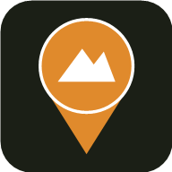

Com uma conta, suas rotas salvas aparecem em todos os seus aparelhos — sem precisar do Google Drive.
Opcional: guarda uma cópia das rotas e das fotos dos pontos numa pasta do seu Google Drive.
Nenhuma pasta criada ainda. Pastas aparecem aqui quando você salva uma rota nelas.
Nenhuma rota salva ainda.
Nenhuma rota salva. Desenhe o trecho no Planejamento e salve.
Navegador e planejador de trilhas
Ao continuar com o Google você confirma ter 18 anos ou mais e concorda com os Termos e a Política de Privacidade.
Carregando…
Crie sua conta para compartilhar trilhas, comparar tempos e andar em comboio com a galera.
Ao continuar com o Google você confirma ter 18 anos ou mais e concorda com os Termos e a Política de Privacidade.
📰 Feed de trilhas · 🏁 Ranking de tempos · 🚙 Comboio ao vivo · seguir amigos.
Apaga a conta, a foto e tudo que você publicou. Não dá para desfazer. Suas rotas salvas neste aparelho e no Google Drive não são afetadas.